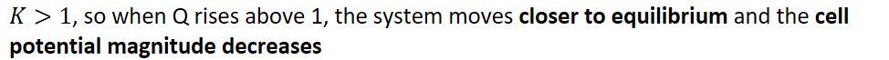

Cell potential depends on the concentrations or pressures of reactants and products
{width="7.59375in" height="0.3541666666666667in"}
As a cell operates, the concentrations change as reactants are consumed/products are produced
Changing the mass of solids does not affect cell potential
{width="5.75in" height="0.3541666666666667in"}
{width="2.0in" height="0.3541666666666667in"}
{width="3.5208333333333335in" height="0.3541666666666667in"}
{width="9.75in" height="0.3541666666666667in"}
As the system approaches equilibrium, the cell potential (volts) decreases
In a voltaic cell:
{width="10.145833333333334in" height="0.6875in"}
When Q is decreased below 1, the cell is further from equilibrium and the cell potential magnitude increases
{width="3.8333333333333335in" height="0.3541666666666667in"}
The opposite happens: When Q goes below 1 => closer to equilibrium => cell potential's magnitude decreases
Q rises above 1 => further from equilibrium => cell potential's magnitude increases
However, in an electrolytic cell, remember INCREASED MAGNITUDE = MORE NEGATIVE
DO NOT USE LE CHATALIER'S PRINCIPLE IN QUESTIONS
The cells are not at equilibrium
Show the effects on Q and compare Q to K